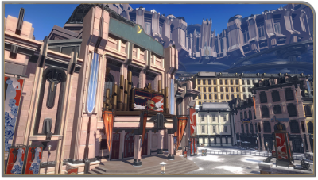

Story 2
Story 2
Jarilo VI
Jarilo VI is the second story you complete. It is the first planet you land on as a member of the Astral Express.
In Jarilo VI, theres a city called Belobog that has the Overworld and Underworld districts. The Underworld is a mining civilization that mines
a material called Geomarrow. Geomarrow is used to keep the city warm -which is extremely important because the planet of Jarilo VI
is almost completely frozen, due to a stellaron. elevators between the two areas were mysteriously shut down
by the Overworld, and the people of Belobog were very confused. In this story arc, you unravel the secrets of Jarilo VI and battle your
way through the corrupt government, freeing the planet from the stellaron caused eternal winter.
Here are some pictures of Belobog:
